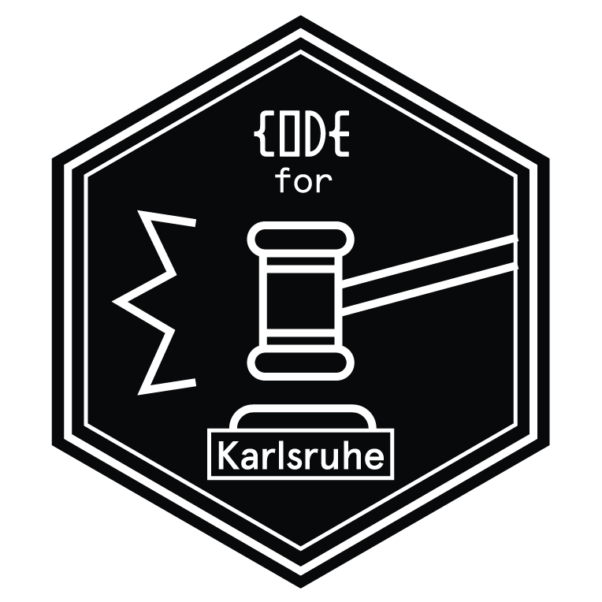

Ein Projekt des Open Knowledge Lab Karlsruhe, inspiriert von der Berlinwahlkarte der Berliner Morgenpost.
Den Quellcode findet ihr auf GitHub.
Wir verwenden Daten der Stadt Karlsruhe, veröffentlicht in deren Transparenzportal unter der Datenlizenz Deutschland — Namensnennung — Version 2.0.